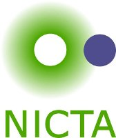

Sponsors
| Cadence Design Systems | ||
|
Certus V&V Center Simula Research Laboratory Lysaker, Norway |
||

|
Microsoft Research | |
|  | NICTA |
Acknowledgements
The organisers are grateful to Prof. Tuğrul Hakioğlu (director), Mesut Erol (manager), and Hazal Büşra Köse (secretary) of ITAP for all the help. The excellent food by Zeki usta and his team was very much appreciated. Thanks also to Joseph Scott, for designing the trombinoscope and maintaining the website during the seminar, as well as to Helmut Simonis and Philipp Rümmer for documenting the seminar with photos.